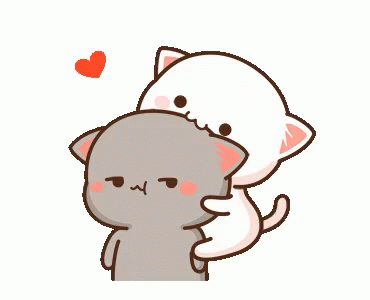
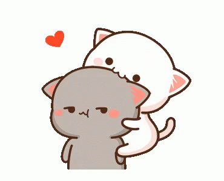

ABOUT OUR LOVE STORY
This story will start from our first interaction until now.
-
November 16, 2023.
First interaction
sebelum ayang menggepeng dan jadi Lee Yoohan (manhwa Payback), katanya dari sini ayang udah naksir sama saya pas jadi tejo. cuma doi masih sok cool dan tsundere gitu, hwhwhw lucu aned.

.jpeg)

.jpeg)
-

December 18, 2023.
Our first private chat
ini setelah saya jadi admin grup chat khusus anak manhwa BL dan ayang udah jadi Lee Yoohan. setelah ada beberapa konflik antar member gc jadi banyak member yang hiatus dan ga aktif. akhirnya buat pembersihan aku chat satu-satu member yang udah ga aktif buat ngasih tau rules gc dan kick kalau sudah tidak mau aktif lagi, dan itu termasuk ayang juga jadi aku chat ayang terus taunya besoknya langsung dibales, entah kenapa pas itu malah gabut dan jadi godain ayang karena suka responnya juga akhirnya malah keterusan dan ternyata kita cocok.

-
December 20, 2023.
My first move
setelah kita chatan lama dan menurut saya kita udah cocok sampai pembahasan ga pernah abis walau bahas hal random sekalipun, akhirnya langkah pertama yang saya ambil itu rombak akun sebelah jadi Yoon Jay biar ayang tau kalo aku serius ngedeketin ayang. dan setelahnya kita pman melalui akun Yoohan dan Yoon Jay, disini semakin leluasa bucinin ayang dan hubungan kita juga semakin deket.

.jpeg)
.jpeg)

-

December 29, 2023.
Our dedication
setelah ayang sudah luluh dengan semua godaan jametie yg aku lakuin dan setelah kita sudah sayang sayangan, akhirnya ayang memutuskan buat jadi Euihyun. disini akunnya pakai side acc ku yang sudah tidak terpakai dan daku rombak sedemikian rupa agar matching antara akun Euihyun punya ayang dan akun Taejoo punyaku, agar supaya cocwit.
.jpeg)

-
December 31, 2023.
OUR RELATIONSHIP
ga butuh waktu lama, akhirnya di malam tahun baru ini saya memutuskan untuk ajak ayang pasang rlsan. dan ga nanggung-nanggung pasangnya langsung status menikah:) walau mensivnya bakal kacau karna ga sesuai tanggal (31) tetapi kita tetep pasang di tanggal 31 karena vibesnya udah cocok dan biar lebih excited nunggu tahun baru ditahun selanjutnya karena sekaligus our anniversary, ehe.

.jpeg) 
January 21, 2024.
Our personal group chat
sebelum punya grup chat tuh kita chatnya beda akun beda topik dan anehnya selalu jalan aja gaada yang berenti, akhirnya disini kita memutuskan buat bikin grup chat yang isinya semua akun kita berdua, karena kita berdua suka labil kalau on pindah pindah akun ga nentu gitu dan biar lebih gampang buat bales chat dan tau satu sama lain lagi on nya dimana jadi ga nyariin:')
.jpeg)

January 31, 2024.
Our 1st Monthversary
Buat mensiv ke 1 bulan ini aku ngide bikin website versi jamet biar mensiv kita berasa spesialnya. ini ada versi videonya juga biar lebih gampang buat liat alur webnya, dan kalau mau liat versi webnya bisa klik link dibawah video yaa

March 31, 2024.
Our 3rd Monthversary
for this mensiversary we not made a post on timeline, but just made a screenshot of my baby words in our private chat, and post it in the story of my Pond Naravit Account.

May 01, 2024.
Our 4th Monthversary
untuk mensiv ke 4 bulan ini kita pindah ke akun Yoon Jay (akunku) dan Yoohan (akun ayang). disini aku ngide lagi untuk rombak beberapa fitur website yang udah aku buat di mensiv ke 1 bulan kita sebelumnya, aku rombak jadi website our story gitu yang berisi menu tambahan dokumentasi setiap kita mensiv. jadi niatnya untuk bulan-bulan kedepannya tiap kita mensiv itu aku ngucapinnya melalui website ini.

July 01, 2024.
Our 6th Monthversary
inally! this is our mensive yang ke 5 bulan, silahkan scroll kebawah atau bisa langsung klik menu Our Monthversary ♡︎ yang ada dipojok kanan atas.
Next Story
Coming
Soon!Happy 6th mensiversary, my dear my love my sweetheart!
Selamat hari jadi yang ke 6 bulan ya sayangkuuu ♡︎
terimakasih sudah mau bertahan dan mewarnai hari-hariku, tetep jadi sayangku yang kiyowok dan gemesin walau lagi mara marah yaayou are the best husband I could have ever hoped for ♡︎
you feel like home to me. you are the finest, loveliest, tenderest, and most beautiful person I have ever known and even that is an understatement. I love you more than words can ever express.
Our Account
Hopefully our account will last a long time until we leave together.
akun utamaku. awalnya aku nge rpin anak dari manhwa BL itu pakai muse Zhenya diakun yang udah Yoon Jay alias om burhan sekarang, terus baru rombak akun Jungkook ku yang ini jadi Yoo Taejoo dari manhwa Low Tide in Twilight. dan entah kenapa lebih nyaman aktif disini karena karakter tejo yang alay dan easy going buat di rpin. awal ketemu dan deket sama ayang juga pake akun ini.
ini awalnya side account punyaku, cuma pas dapet info dari adikku (jingjing) kalau kamu ada niatan mau rpin Euihyun akhirnya aku langsung rombak akun ini jadi muse Kim Euihyun biar bisa aku bucinin di akun tejo. ini pas kita belum nikah tapi udah yakin satu sama lain ya yang, rlsannya juga pertama diakun ini terus baru diakun Yoohan dan Yoon Jay.
awalnya ini akun muse Zhenya (manhwa Codename Anastasia) terus aku rombak jadi Yoon Jay dengan niat buat deketin ayang biar keliatan kalo aku deketin ayang itu serius jadi aku rombaknya sebagai pasangan ayang di manhwa yang dia musein, ehehe.
akun utama ayang. awalnya aku pm ayang diakun ini pake akun tejo buat infoin rules GC manhwa boys buat kick member yang emang udah ga aktif, awalnya ayang udah lumayan ga aktif juga diakun ini, terus ternyata besoknya dibales yang berakhir malah aku modusin, dan ternyata kita punya banyak kesamaan yang buat kita nyaman ngobrolin hal random satu sama lain, sampe akhirnya aku nekat buat deketin ayang terus gas bikin akun Yoon Jay buat seriusin kamu.
aku buat akun ini karena dikodein ayang, awalnya lagi suka liat moment2 pondphuwin terus nyaranin ayang seriesnya pondphuwin yang Fish Upon The Sky dan ternyata ayang suka dan malah jadi bucinin pond:) maka dari itu daku langsung bikin akun pond naravit ini, dan aku juga nyaranin ayang buat jadi phuwin biar kita berdua bisa saling bucinin satu sama lain diakun pondphuwin.


-modified.jpg)
-modified.jpg)